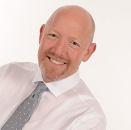
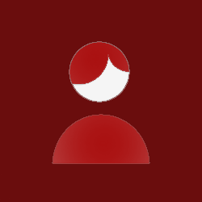

Sacramento Applied Kinesiology
Roseville Applied Kinesiology
Sacramento Applied Kinesiology can help you eradicate your pain through Applied Kinesiology

Multifaceted Rehabilitation
Applied Kinesiology differs from regular medicine by focusing on the care of the entire body as a whole, not just individual parts.

Innovative Diagnosis and Treatment
Most health care professionals use Applied Kinesiology in addition with other holistic treatment options to perform better diagnostics on patients.
Non-intrusive Medicine
The best part about Sacramento Applied Kinesiology in Roseville is that we provide health examinations for patients without the physical and mental stress of intrusion.
Welcome to Sacramento Applied Kinesiology
We are proud to offer a wide range of comprehensive services to meet the needs of our patients.
Sacramento Applied Kinesiology provides a relaxing atmosphere at our Kinesiology office in Roseville for all patients to release the tension affecting their lives. Our office staff is friendly and professional, and we are all here to help our patients receive the Kinesiology care they need to get through life pain free. We take the time to learn the health concerns of all our patients, and we are genuinely concerned about their wellbeing. This is why we create individualized plans for all patients, so we can better address their pain with Kinesiology care. At Sacramento Applied Kinesiology in Roseville, we take the time to encourage all patients to make certain lifestyle changes that can help improve vitality and reduce pain. Dr. VanWagenen and our team of assistants at Sacramento Applied Kinesiology are waiting to welcome you to our Roseville office, and we are eager to help make your Kinesiology visit an enjoyable and uplifting experience.
Are You Ready To Start Kinesiology?
We are always ready to welcome you in our center!
How we work
Our Services
Applied Kinesiology
Imagine that you have a problem and you are working with an acupuncturist, nutritionist, naturopath, a homeopath and a chiropractor, to uncover your health issues.
Read more
FX-635 Laser Therapy
Now you can relieve the pain and inflammation of the heel associated with plantar fasciitis. Our new FDA market cleared laser has been proven in al tests to effectively treat this painful condition.
Read more
Cold Laser Therapy
Cold laser therapy is low-intensity laser therapy that stimulates healing, reduces inflammation and shrinks fat cells while using low levels of light.
Read more
Pulsed Electromagnetic Field Therapy
PEMF exercise devices from Pulse Centers use pulled electromagnetic fields (PEMF) to immerse low energy cells in pure, raw energy. Each cell in your body works like a battery and can hold a charge.
Read moreWhat we treat
Our Services
Back Pain

Neck Pain
Shoulder Pain

Headaches
Whiplash

Pinched Nerve
Disc Injuries

Sciatica

Meet Dr. VanWagenen
Dr. Brian Van Wagenen offers far more than traditional chiropractic care. With advanced training and a whole-body approach, he helps patients experience pain relief, better energy, improved digestion, allergy relief, balanced hormones, a stronger immune system, and lasting wellness.
Along with precise chiropractic adjustments, Dr. Brian uses Applied Kinesiology muscle testing to pinpoint weaknesses and assess overall body function. He also provides hormone therapy management and personalized nutritional counseling to support complete health.
Many of Dr. Brian’s patients come to him after limited results with other chiropractors. By uncovering hidden issues — such as digestive, liver, or immune system imbalances — he helps patients break through roadblocks and finally achieve the lasting wellness they’ve been seeking.
In their own words
Review Us Today!
I am a dentist and it is important for me to maintain a healthy back, so I see Dr. Vanwagenen regularly. When we first moved to Rocklin I threw my back out and Dr. Vanwagenen got me back on my feet quickly so I didn't have to miss a day of work.

I've been to a lot of different chiropractors and Dr. Vanwagenen is definitely one of the good ones! I always feel much better after my appointments and the supplements he recommended have made a big difference, too.
I was looking for a chiropractor with a background in kinesiology and came to the right place. I tell Dr. Van Wagenen the things that are bothering me (and want to change) and he has all the answers.
Are You Ready To Start Kinesiology?
We are always ready to welcome you in our center!